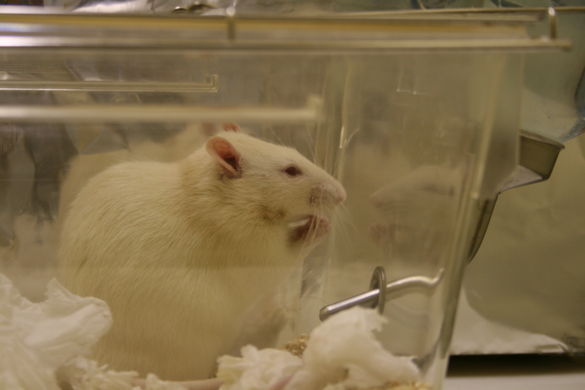
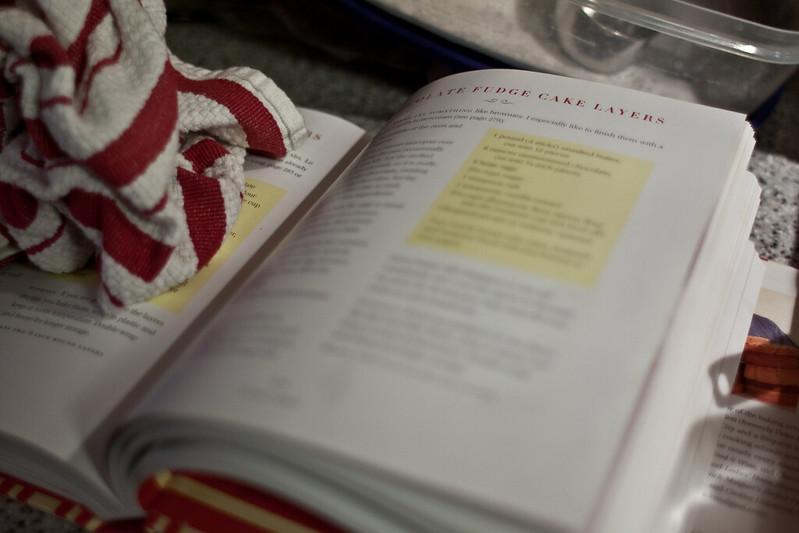
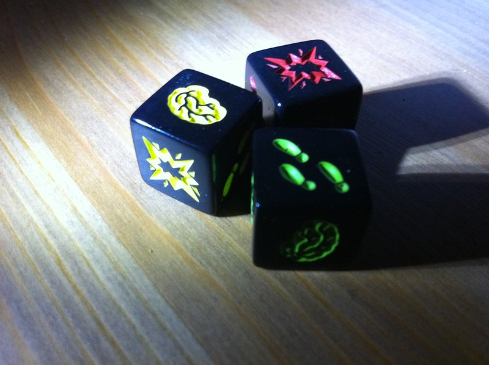
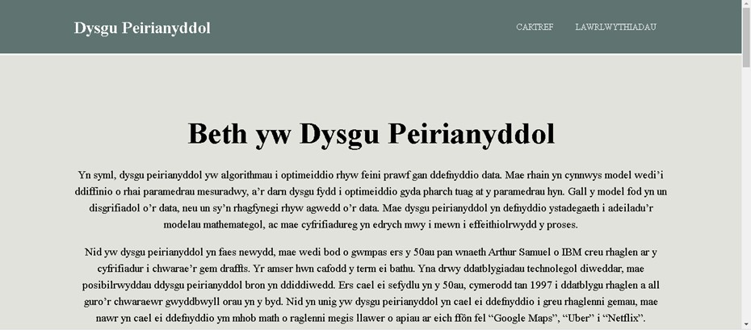

Identifying Periods of Immobility in Mice
For my MSc project supervised by Professor Chris Williams, I had access to a large video data collection accompanied by radio-frequency identification (RFID) information for each mouse. Each mouse from the videos were labelled on a per-second basis with its most relevant behaviour type. Refinement of the multi-behaviour labels was done down to Immobile and Mobile binary labels for the group of mice in the video. With this refinement, exploratory data analysis was performed, which led to the building of interpretable baseline machine learning models for predicting the binary labels using video and RFID information. Experimentation on a pretrained ResNet-18 was then performed to begin evaluating its suitability for transfer learning. Finally, the ResNet-18 pretrained model was implemented as part of an end-to-end network as a feature extractor which then fed into an LSTM to collate features over all the frames in the 1-second intervals. From the LSTM, a fully connected layer took the output and reduced it to a probability of being Mobile using a sigmoid activation function.
Download will be here shortly.
Detection and Classification of Masked Faces
During the COVID-19 pandemic, I worked on a project which investigated the effectiveness of transfer learning a pretrained MTCNN network (a facial recognition model) on a dataset containing regular faces along with correctly and incorrectly worn face masks. The experimentation looked at how training the different network components affected the detection performance. Since the dataset used was small, research was done to check whether further training on a sizeable alternative dataset with a high proportion of masks can help bias the network to help detect masked faces. For classifying the three different scenarios of wearing the masks, experimentation was done using an SVM with various inputs.
Written work for this project can be found here, and the code can be downloaded here.

Collaborative Filtering
This project looked at creating a straightforward recommender system that suggests an additional/final ingredient to a partial recipe. A sizeable amount of the project was orientated towards the exploratory data analysis of the dataset of recipes. The collaborative filtering that shaped the recommender system used both user-based and item-based methodologies. As the data was very sparse, the exploratory data analysis found that logistic PCA was the optimum method of dimensionality reduction. This new dimensionality reduced space was also used with the user-based methodology.
Code for the collaborative filtering is here, while the accompanying document is here.
Comparing Different Perturbations
Experimentation was done to investigate the effect of varying intensities of nine different perturbations on images. The performance of an SVM using a bag of visual words was compared with a pretrained network using a dataset containing pictures of dogs and cats. Both methods were trained on a segment of images and then evaluated against the others with varying levels of perturbations. These segments were split using 3-fold cross-validation. The write-up goes into depth with how the methodologies compare with each perturbation.
Both code and write-up of this project are here. Code is located at the bottom of the document.

Analysis of Zombie Dice
A statistical analysis of the popular board game Zombie Dice was done; it delved into different strategies to maximise the likelihood of victory in the game. The extensive analysis looks into numerous strategies and examines the results for any commonalities and relationships.
The write-up of the analysis is here.

Introduction to Machine Learning Methods in Welsh
Due to the scarcity of Welsh learning material, especially within the circles of Artificial Intelligence, I produced an introductory tutorial in both R and Python for three machine learning techniques for a half credit project. The three were k-means clustering, logistic regression and naive Bayes.
Tutorial with code can be downloaded here.